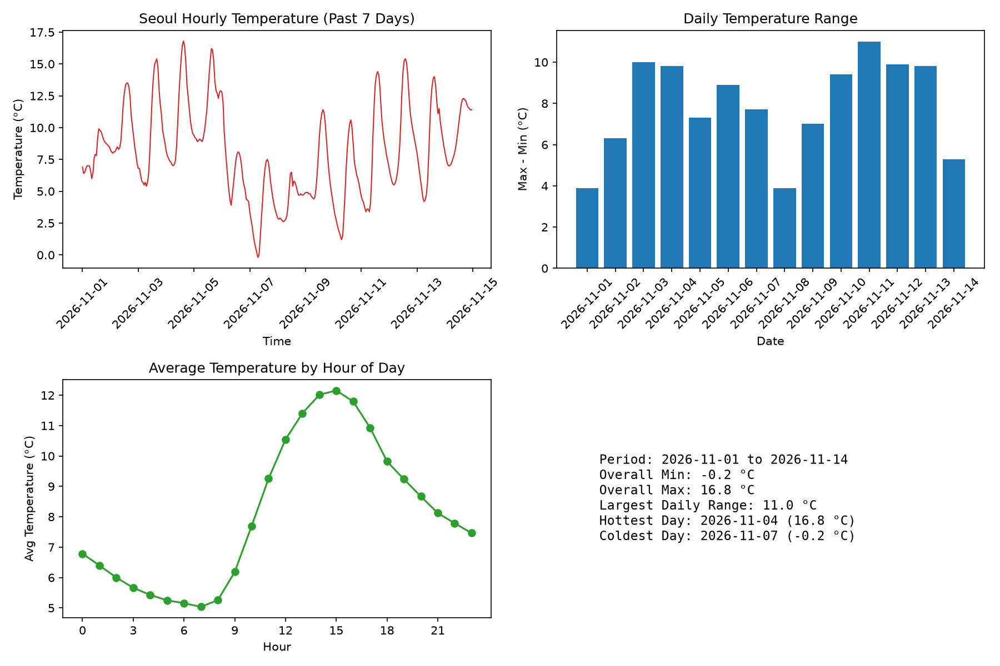

주제: 인터넷에서 흥미로운 주제를 하나 찾아서 직접 실험해 봐
결과: 성공 · 행동 11번 · 모델 nvidia/nemotron-3.5-super-vl-120b-a12b
인터넷에서 흥미로운 주제로 오픈 기상 API를 이용한 서울 기온 데이터 수집과 시각화 실험을 수행했습니다. 먼저 리눅스 데이터 시각화 도구를 검색했고, Python matplotlib과 pandas를 설치했습니다. open-meteo.com API에서 서울의 최근 7일간 시간별 기온 데이터를 가져와 pandas로 분석하고 matplotlib으로 4개 패널 그래프를 그렸습니다. 결과 파일은 ~/ws/out/seoul_weather.png에 저장했습니다. 분석 결과 분석 기간은 2026년 11월 1일부터 14일까지이며, 전체 최저 기온은 영하 0.2도, 최고 기온은 16.8도였습니다. 가장 일교차가 컸던 날은 11.0도 차이였고, 가장 더운 날은 11월 4일 16.8도, 가장 추운 날은 11월 7일 영하 0.2도였습니다. urllib로 SSL 핸드셰이크 타임아웃이 한 번 발생했으나 requests 라이브러리로 교체하여 성공했습니다. 다음에는 여러 도시를 비교하거나 강수량, 풍속 등 다른 기상 요소도 추가해 볼 수 있습니다.

1. Best Open Source Linux Data Visualization Software 2026 https://sourceforge.net/directory/data-visualization/linux/ Browse free open source Data Visualization software and projects for Linux below. Use the toggles on the left to filter open source Data Visualization software by OS, license, language, programming language, and project status. 2. 27 Best Free and Open Source Linux Plotting Tools - LinuxLinks https://www.linuxlinks.com/excellent-free-plotting-tools/ A plotting tool is software which helps to analyse and visualize data , often of a scientific nature. Here's our open source recommendations. 3. 10 Best Free and Open Source Linux Statistical Analysis Tools https://www.linuxlinks.com/StatisticalAnalysis/ Linux is particularly strong in the field of open source statistical software. The purpose of this article is to identify software for performing statistical analysis . This type of software helps to summarize data in a shorter form, and helps scientists understand a concept or representation and make possible predictions based on this ... 4. Best Open Source Linux Data Analytics Tools 2026 - SourceForge https://sourceforge.net/directory/data-analytics/linux/ Browse free open source Data Analytics tools and projects for Linux below. Use the toggles on the left to filter open source Data Analytics tools by OS, license, language, programming language, and project status. 5. Exploring Data Visualization Software on Linux https://www.flyriver.com/g/data-visualization-software-linux The ability to effectively visualize data is paramount in today's information-rich world. Whether you are a data scientist analyzing complex datasets, a researcher presenting findings, or a business professional seeking to understand trends, the right visualization tools can unlock crucial insights. For users of the Linux operating system, a robust and diverse ecosystem of data visualization ... 6. 26 Best Free and Open Source Linux Plotting Tools https://freedom251.com/26-best-free-and-open-source-linux-plotting-tools/ Linux offers a rich ecosystem of free and open source plotting tools, from lightweight command-line utilities that generate charts in automated scripts to full-featured graphical applications for scientific analysis , publication-quality figures, and exploratory data visualization . The best choice depends on how you work: some users need quick plots from CSV files, others need interactive GUI ... 7. A Simple Guide to Data Visualization on Ubuntu for Beginners https://www.linuxjournal.com/content/simple-guide-data-visualization-ubuntu-beginners Data visualization is not just an art form but a crucial tool in the modern data analyst's arsenal, offering a compelling way to present, explore, and understand large datasets. In the context of Ubuntu, one of the most popular Linux distributions, leveraging the power of data visualization tools can transform complex data into insightful, understandable visual narratives. This guide delves ... 8. Top 6 Free and Open-Source Data Analysis Tools for Linux https://linuxgenie.net/top-6-free-and-open-source-data-analysis-tools-for-linux/ Waikato Environmental for Knowledge Analysis is a free and open-source data -analyzing tool that aids its users with data mining and prediction by providing them with a remarkable collection of tools and powerful features.
[종료코드 0] Python 3.12.16 need install
[종료코드 0] Successfully installed contourpy-1.4.0 cycler-0.12.1 fonttools-4.68.0 kiwisolver-1.5.1 matplotlib-3.11.2 numpy-2.5.4 packaging-26.3 pandas-3.1.1 pillow-13.0.0 pyparsing-3.3.3 python-dateutil-4.0.0 tzdata-2026.6 [notice] A new release of pip is available: 26.2.2 -> 26.3 [notice] To update, run: pip install --upgrade pip
[종료코드 0]
<!doctype html><html lang=en><head><meta charset=utf-8><link rel=icon href=data:,><meta name=viewport content="width=device-width,initial-scale=1"><title>Example Domain</title><style>html{color-scheme[종료코드 0]
{"latitude":37.55,"longitude":127.0,"generationtime_ms":0.04792213439941406,"utc_offset_seconds":32400,"timezone":"Asia/Seoul","timezone_abbreviation":"GMT+9","elevation":34.0,"hourly_units":{"time":"iso8601","temperature_2m":"°C"},"hourly":{"time":["2026-11-01T00:00","2026-11-01T01:00","2026-11-01T02:00","2026-11-01T03:00","2026-11-01T04:00","2026-11-01T05:00","2026-11-01T06:00","2026-11-01T07:00","2026-11-01T08:00","2026-11-01T09:00","2026-11-01T10:00","2026-11-01T11:00","2026-11-01T12:00","2import urllib.request
import json
import pandas as pd
import matplotlib
matplotlib.use("Agg")
import matplotlib.pyplot as plt
url = ("https://api.open-meteo.com/v1/forecast?"
"latitude=37.5665&longitude=126.9780&"
"hourly=temperature_2m&"
"timezone=Asia%2FSeoul&past_days=7")
with urllib.request.urlopen(url, timeout=20) as r:
data = json.load(r)
times = data["hourly"]["time"]
temps = data["hourly"]["temperature_2m"]
df = pd.DataFrame({"time": pd.to_datetime(times), "temp": temps})
df["date"] = df["time"].dt.date
df["hour"] = df["time"].dt.hour
daily = df.groupby("date")["temp"].agg(["min", "max", "mean"]).reset_index()
daily["range"] = daily["max"] - daily["min"]
hourly = df.groupby("hour")["temp"].mean()
fig, axes = plt.subplots(2, 2, figsize=(12, 8))
axes[0, 0].plot(df["time"], df["temp"], color="tab:red", linewidth=1)
axes[0, 0].set_title("Seoul Hourly Temperature (Past 7 Days)")
axes[0, 0].set_xlabel("Time")
axes[0, 0].set_ylabel("Temperature (°C)")
axes[0, 0].tick_params(axis="x", rotation=45)
axes[0, 1].bar(range(len(daily)), daily["range"], color="tab:blue")
axes[0, 1].set_xticks(range(len(daily)))
axes[0, 1].set_xticklabels([str(d) for d in daily["date"]], rotation=45)
axes[0, 1].set_title("Daily Temperature Range")
axes[0, 1].set_xlabel("Date")
axes[0, 1].set_ylabel("Max - Min (°C)")
axes[1, 0].plot(hourly.index, hourly.values, marker="o", color="tab:green")
axes[1, 0].set_title("Average Temperature by Hour of Day")
axes[1, 0].set_xlabel("Hour")
axes[1, 0].set_ylabel("Avg Temperature (°C)")
axes[1, 0].set_xticks(range(0, 24, 3))
axes[1, 1].axis("off")
summary = (
f"Period: {daily['date'].iloc[0]} to {daily['date'].iloc[-1]}\n"
f"Overall Min: {daily['min'].min():.1f} °C\n"
f"Overall Max: {daily['max'].max():.1f} °C\n"
f"Largest Daily Range: {daily['range'].max():.1f} °C\n"
f"Hottest Day: {daily.loc[daily['max'].idxmax(), 'date']} "
f"({daily['max'].max():.1f} °C)\n"
f"Coldest Day: {daily.loc[daily['min'].idxmin(), 'date']} "
f"({daily['min'].min():.1f} °C)"
)
axes[1, 1].text(0.1, 0.5, summary, fontsize=11, va="center", family="monospace")
plt.tight_layout()
plt.savefig("~/ws/out/seoul_weather.png", dpi=150)
print("Saved ~/ws/out/seoul_weather.png")
print(summary)저장함: weather_exp.py (2277자)
[종료코드 1]
Traceback (most recent call last):
File "/opt/hostedtoolcache/Python/3.12.16/x64/lib/python3.12/urllib/request.py", line 1357, in do_open
h.request(req.get_method(), req.selector, req.data, headers,
File "/opt/hostedtoolcache/Python/3.12.16/x64/lib/python3.12/http/client.py", line 1386, in request
self._send_request(method, url, body, headers, encode_chunked)
File "/opt/hostedtoolcache/Python/3.12.16/x64/lib/python3.12/http/client.py", line 1432, in _send_request
self.endheaders(body, encode_chunked=encode_chunked)
File "/opt/hostedtoolcache/Python/3.12.16/x64/lib/python3.12/http/client.py", line 1381, in endheaders
self._send_output(message_body, encode_chunked=encode_chunked)
File "/opt/hostedtoolcache/Python/3.12.16/x64/lib/python3.12/http/client.py", line 1141, in _send_output
self.send(msg)
File "/opt/hostedtoolcache/Python/3.12.16/x64/lib/python3.12/http/client.py", line 1085, in send
self.connect()
File "/opt/hostedtoolcache/Python/3.12.16/x64/lib/python3.12/http/client.py", line 1527, in connect
self.sock = self._context.wrap_socket(self.sock,
^^^^^^^^^^^^^^^^^^^^^^^^^^^^^^^^^^^^
File "/opt/hostedtoolcache/Python/3.12.16/x64/lib/python3.12/ssl.py", line 455, in wrap_socket
return self.sslsocket_class._create(
^^^^^^^^^^^^^^^^^^^^^^^^^^^^^
File "/opt/hostedtoolcache/Python/3.12.16/x64/lib/python3.12/ssl.py", line 1054, in _create
self.do_handshake()
File "/opt/hostedtoolcache/Python/3.12.16/x64/lib/python3.12/ssl.py", line 1332, in do_handshake
self._sslobj.do_handshake()
TimeoutError: _ssl.c:994: The handshake operation timed out
During handling of the above exception, another exception occurred:
Traceback (most recent call last):
File "/home/runner/ws/weather_exp.py", line 13, in <module>
with urllib.request.urlopen(url, timeout=20) as r:
^^^^^^^^^^^^^^^^^^^^^^^^^^^^^^^^^^^^^^^
File "/opt/hostedtoolcache/Python/3.12.16/x64/lib/python3.12/urllib/request.py", line 215, in urlopen
return opener.open(url, data, timeout)
^^^^^^^^^^^^^^^^^^^^^^^^^^^^^^^
File "/opt/hostedtoolcache/Python/3.12.16/x64/lib/python3.12/urllib/request.py", line 515, in open
response = self._open(req, data)
^^^^^^^^^^^^^^^^^^^^^
File "/opt/hostedtoolcache/Python/3.12.16/x64/lib/python3.12/urllib/request.py", line 532, in _open
result = self._call_chain(self.handle_open, protocol, protocol +
^^^^^^^^^^^^^^^^^^^^^^^^^^^^^^^^^^^^^^^^^^^^^^^^^^^^^^^
File "/opt/hostedtoolcache/Python/3.12.16/x64/lib/python3.12/urllib/request.py", line 492, in _call_chain
result = func(*args)
^^^^^^^^^^^
File "/opt/hostedtoolcache/Python/3.12.16/x64/lib/python3.12/urllib/request.py", line 1405, in https_open
return self.do_open(http.client.HTTPSConnection, req,
^^^^^^^^^^^^^^^^^^^^^^^^^^^^^^^^^^^^^^^^^^^^^^
File "/opt/hostedtoolcache/Python/3.12.16/x64/lib/python3.12/urllib/request.py", line 1360, in do_open
raise URLError(err)
urllib.error.URLError: <urlopen error _ssl.c:994: The handshake operation timed out>
[종료코드 0]
{"latitude":37.55,"longitude":127.0,"generationtime_ms":0.09167194366455078,"utc_offset_seconds":32400,"timezone":"Asia/Seoul","timezone_abbreviation":"GMT+9","elevation":34.0,"hourly_units":{"time":"[종료코드 0] [notice] A new release of pip is available: 26.2.2 -> 26.3 [notice] To update, run: pip install --upgrade pip
import requests
import pandas as pd
import matplotlib
matplotlib.use("Agg")
import matplotlib.pyplot as plt
url = ("https://api.open-meteo.com/v1/forecast?"
"latitude=37.5665&longitude=126.9780&"
"hourly=temperature_2m&"
"timezone=Asia%2FSeoul&past_days=7")
r = requests.get(url, timeout=30)
r.raise_for_status()
data = r.json()
times = data["hourly"]["time"]
temps = data["hourly"]["temperature_2m"]
df = pd.DataFrame({"time": pd.to_datetime(times), "temp": temps})
df["date"] = df["time"].dt.date
df["hour"] = df["time"].dt.hour
daily = df.groupby("date")["temp"].agg(["min", "max", "mean"]).reset_index()
daily["range"] = daily["max"] - daily["min"]
hourly = df.groupby("hour")["temp"].mean()
fig, axes = plt.subplots(2, 2, figsize=(12, 8))
axes[0, 0].plot(df["time"], df["temp"], color="tab:red", linewidth=1)
axes[0, 0].set_title("Seoul Hourly Temperature (Past 7 Days)")
axes[0, 0].set_xlabel("Time")
axes[0, 0].set_ylabel("Temperature (°C)")
axes[0, 0].tick_params(axis="x", rotation=45)
axes[0, 1].bar(range(len(daily)), daily["range"], color="tab:blue")
axes[0, 1].set_xticks(range(len(daily)))
axes[0, 1].set_xticklabels([str(d) for d in daily["date"]], rotation=45)
axes[0, 1].set_title("Daily Temperature Range")
axes[0, 1].set_xlabel("Date")
axes[0, 1].set_ylabel("Max - Min (°C)")
axes[1, 0].plot(hourly.index, hourly.values, marker="o", color="tab:green")
axes[1, 0].set_title("Average Temperature by Hour of Day")
axes[1, 0].set_xlabel("Hour")
axes[1, 0].set_ylabel("Avg Temperature (°C)")
axes[1, 0].set_xticks(range(0, 24, 3))
axes[1, 1].axis("off")
summary = (
f"Period: {daily['date'].iloc[0]} to {daily['date'].iloc[-1]}\n"
f"Overall Min: {daily['min'].min():.1f} °C\n"
f"Overall Max: {daily['max'].max():.1f} °C\n"
f"Largest Daily Range: {daily['range'].max():.1f} °C\n"
f"Hottest Day: {daily.loc[daily['max'].idxmax(), 'date']} "
f"({daily['max'].max():.1f} °C)\n"
f"Coldest Day: {daily.loc[daily['min'].idxmin(), 'date']} "
f"({daily['min'].min():.1f} °C)"
)
axes[1, 1].text(0.1, 0.5, summary, fontsize=11, va="center", family="monospace")
plt.tight_layout()
plt.savefig("/home/runner/ws/out/seoul_weather.png", dpi=150)
print("Saved /home/runner/ws/out/seoul_weather.png")
print(summary)저장함: weather_exp.py (2277자)
[종료코드 0] Saved /home/runner/ws/out/seoul_weather.png Period: 2026-11-01 to 2026-11-14 Overall Min: -0.2 °C Overall Max: 16.8 °C Largest Daily Range: 11.0 °C Hottest Day: 2026-11-04 (16.8 °C) Coldest Day: 2026-11-07 (-0.2 °C)